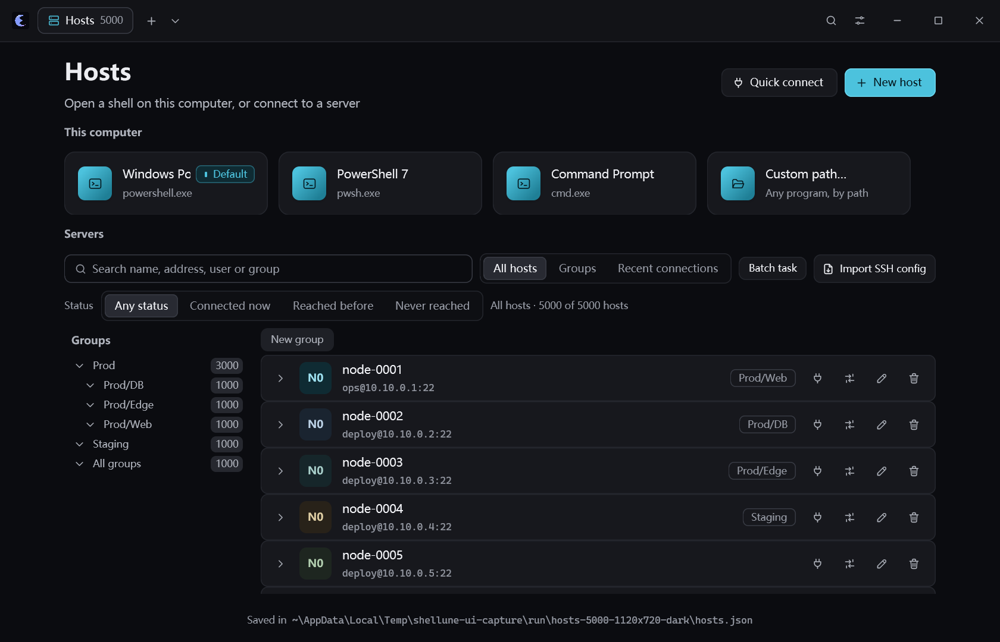
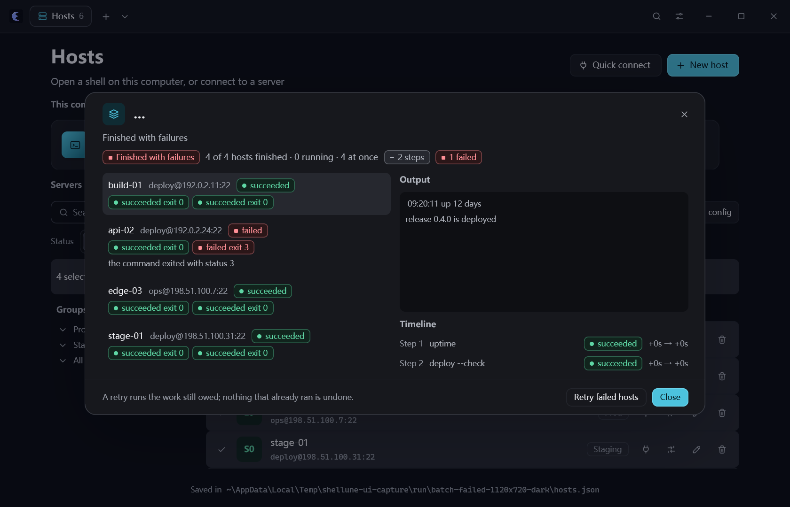
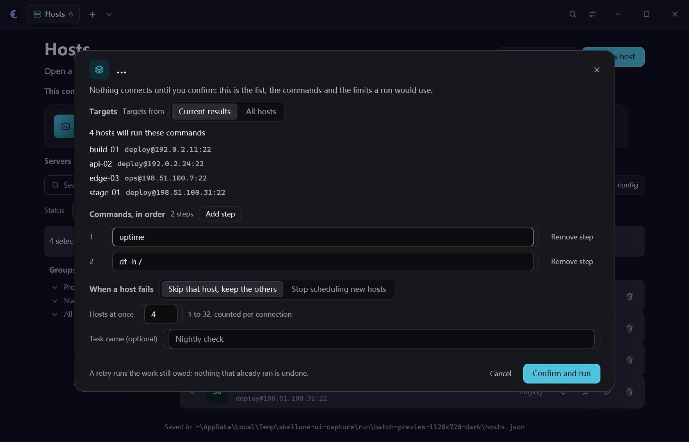
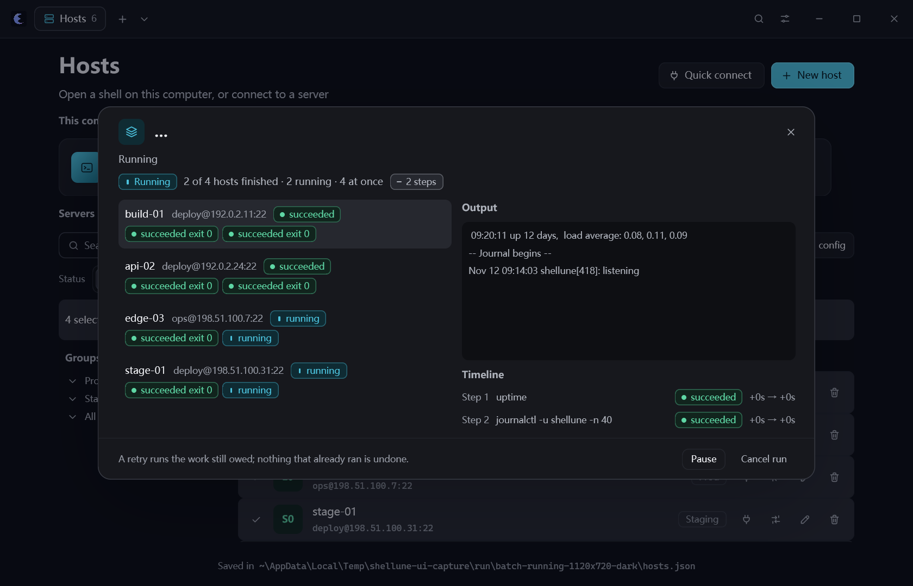
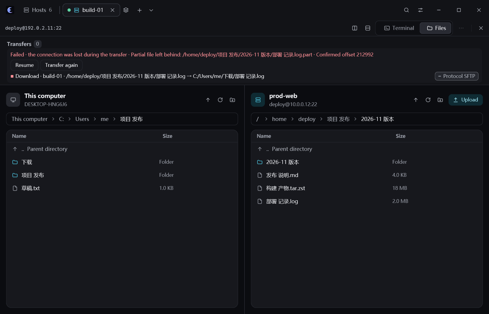
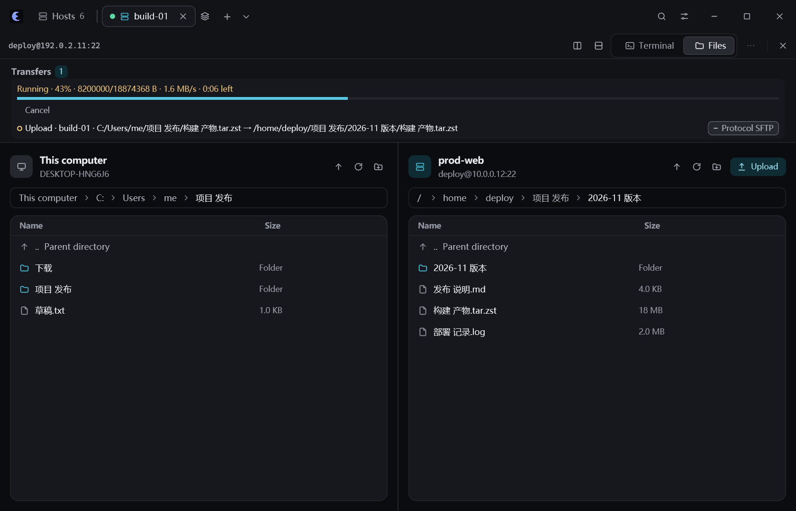
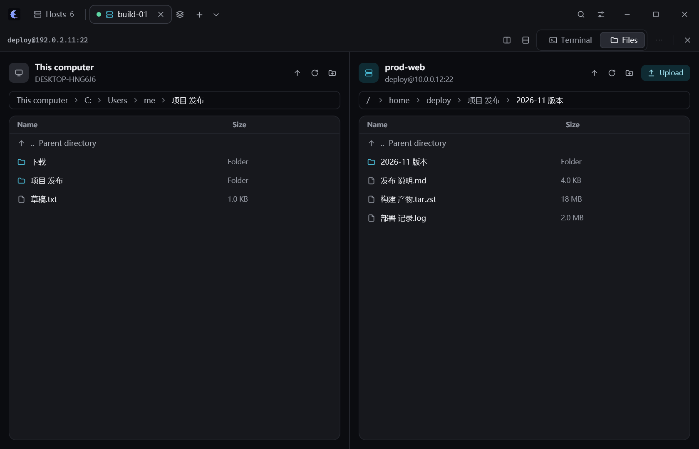
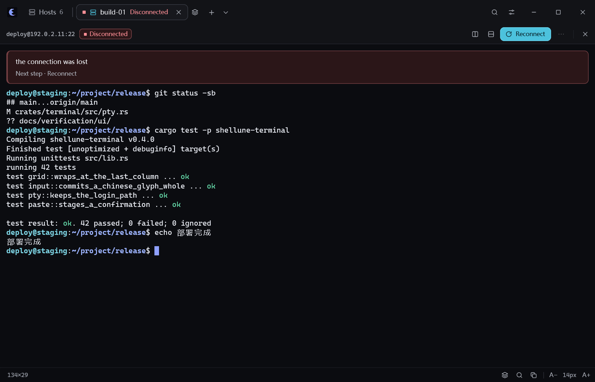
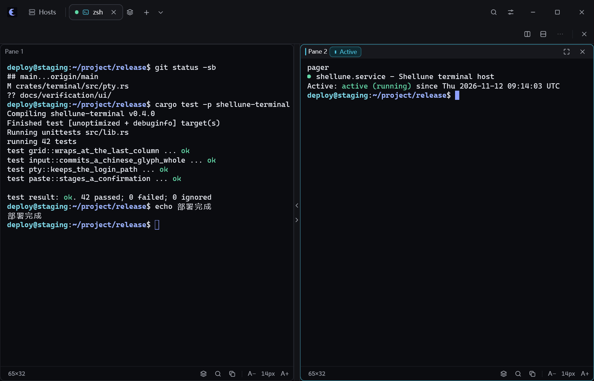
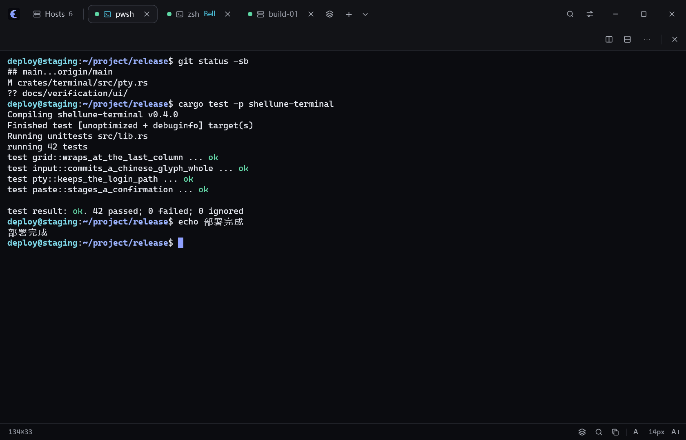

fixture: six saved hosts in three groups, seeded on disk before the view starts
does not prove: shows the list this build draws; the hosts were never connected and no group tree exists yet


fixture: five thousand saved hosts in four groups, written to the run's own root before the view starts
does not prove: shows the list this build draws and the filters above it; the list is asked for the rows it shows, so the shot cannot show how many elements exist. No host was connected, so no connection state is part of it

fixture: the same five thousand hosts, grouped Prod/Web, Prod/DB, Prod/Edge and Staging in the grouped view
does not prove: shows the group column and the group headers of the list; opening and closing a group is not part of the shot, and no group was created or moved by it


fixture: the same runner over four hosts, where one command exits 3 on one host and the other hosts succeed
does not prove: shows the failed host, its exit status and reason, the untouched hosts and the retry action; no rollback is claimed, because none happens


fixture: six saved hosts with four selected, two ordered commands, concurrency 4 and the skip-host policy
does not prove: shows the preview this build draws before anything is confirmed: the count of targets, their addresses, the commands and the limits. No session was opened and no command was sent, which is what the shot cannot show but the model proves


fixture: the real batch runner over four hosts and two commands, two hosts finished and two held inside the second command by the fixture gate
does not prove: shows the states, exit results, output and timeline the runner reported; the transport is a fixture, so this is not evidence about any SSH server

fixture: three saved rules - local, remote and SOCKS - with the first marked as listening
does not prove: shows the kind, the host each rule goes through, which side each endpoint is on and the state of every row; no socket was bound and no connection exists


fixture: one transfer failed the way a lost connection stops it: it left a partial file
does not prove: shows the reason, the partial file and the retry actions of a task the queue really holds; no transfer was attempted


fixture: one transfer in the strip, started and progressed through the queue's own events
does not prove: shows the share, the measured speed and the time left of a task this build holds; no byte was moved and no connection took part

fixture: default preferences; nothing is saved
does not prove: shows the category and item navigation and the one page it opens; the values are this build's defaults and no preference was written

fixture: default preferences; every action at its default binding
does not prove: shows the search, the scope filter and the bindings in force on the shortcut page alone; pressing a control is not part of the shot


fixture: both file sources answered from fixture listings; nothing was read from disk or a server
does not prove: shows the two columns, their own paths, the actions each row offers and the direction between them; no directory was really listed, so no permission or server behaviour is shown


fixture: a saved host's display-only terminal, ended the way a lost connection ends
does not prove: proves the state, the reason and the next step are readable on the merged head; no connection was ever made, so no transport behaviour is shown

fixture: one display-only session fed a fixed transcript; no PTY or shell ran
does not prove: proves terminal layout, colour and text rendering; proves nothing about a live shell, its environment or its keystrokes


fixture: one session split left and right, the second pane holding a second display-only session
does not prove: proves a split marks its panes and its active pane without repeating the session; the second pane has no process behind it


fixture: two display-only shells and one saved host's terminal, the second tab carrying a background bell
does not prove: proves the merged head names the current tab once, and that another tab's bell is marked while it is not the one on screen; no shell, SSH session or bell from a real program is part of it